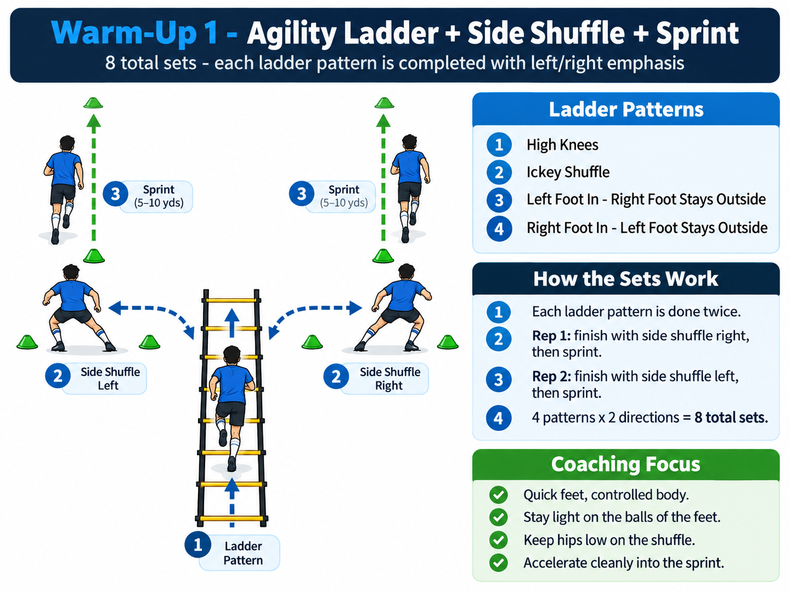
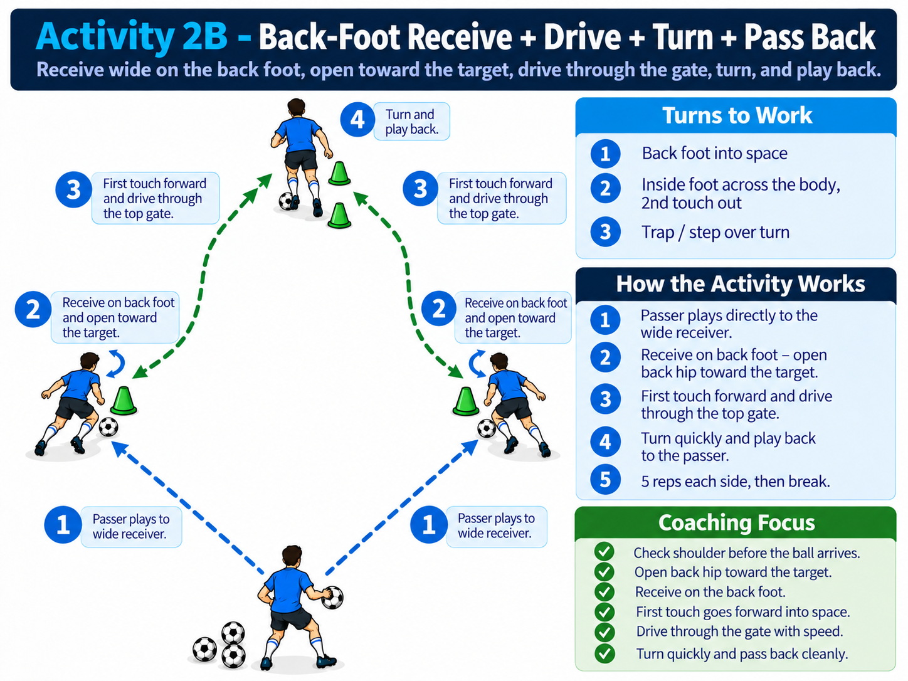
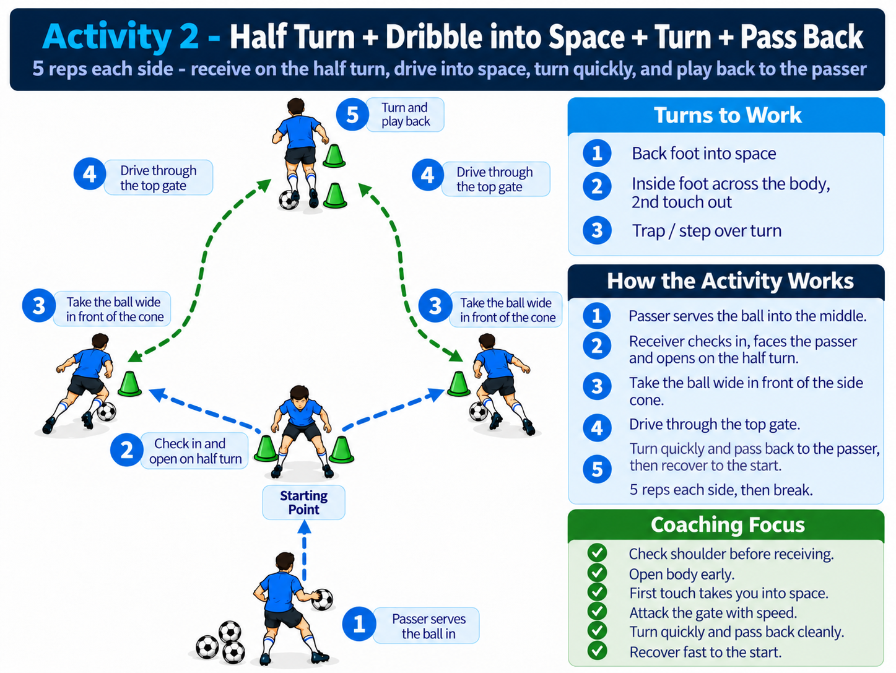
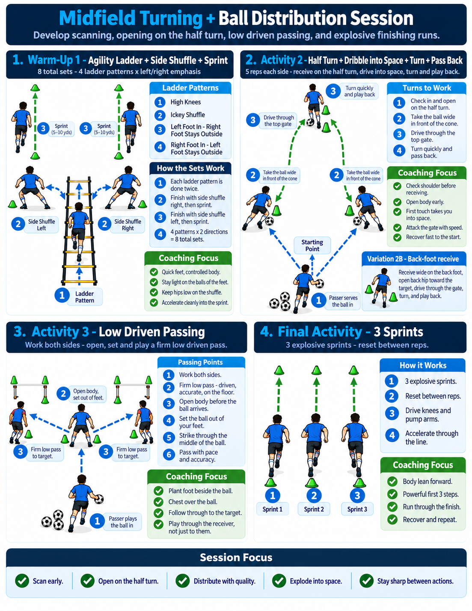

Session Overview
The session progresses from movement preparation into midfield receiving, turning, ball distribution and finally full-speed acceleration.
Ladder + Shuffle + Sprint
Quick feet, lateral movement and acceleration.
Half Turn + Dribble
Receive centrally and turn into open space.
Back-Foot Receive
Open the back hip and drive forward quickly.
Low Driven Passing
Firm, accurate distribution with both feet.
3 Full-Speed Sprints
Finish the session with maximum-quality acceleration.
Warm-Up 1 - Agility Ladder + Side Shuffle + Sprint
Complete the ladder pattern, exit laterally, then accelerate. Each ladder variation is completed once to the right and once to the left.

Ladder → Side Shuffle → Sprint
How It Works
- Complete the selected agility ladder pattern.
- Exit the ladder under control.
- Rep 1 - side shuffle to the right.
- Rep 2 - side shuffle to the left.
- Finish each rep with a short acceleration.
- Use 4 different ladder patterns.
Video Demonstration
Activity 2A - Half Turn + Dribble Into Space + Turn + Pass Back
The midfielder receives centrally, opens on the half turn, drives into space and then turns again before playing back to the passer.

Receive → Turn → Drive → Turn → Pass
Sequence
- Passer plays into the midfielder.
- Midfielder checks shoulder before receiving.
- Receive on the half turn.
- Take the ball wide and in front of the cone.
- Drive through the outside gate.
- Make a quick turn after passing through the gate.
- Play the ball firmly back to the passer.
- Hustle back to the central starting position.
- Repeat on the opposite side.
Turns To Work
Activity 2B - Back-Foot Receive + Drive + Turn + Pass Back
A simpler receiving pattern emphasizing body orientation, the back foot and a forward first touch.

Open Back Hip Toward the Target
Sequence
- Pass is played directly toward the midfielder.
- Check shoulder before the ball arrives.
- Open the back hip toward the target.
- Receive with the back foot.
- Use the first touch to move forward.
- Drive quickly through the gate.
- Turn and play the ball back to the passer.
Activity 3 - Low Driven Passing
Develop a firm, accurate midfield pass that travels quickly along the ground. Work both right and left foot.
Low Driven Pass
Low Driven Pass
Final Activity - 3 Full-Speed Sprints
Finish with three maximum-quality efforts. The goal is speed, not conditioning.
Sprint 1
Powerful first three steps.
Sprint 2
Aggressive arm action and forward acceleration.
Sprint 3
Finish through the line at maximum speed.

Session Message
The goal is not simply to complete the drills. Every activity should reinforce the habits a midfielder needs in the game: awareness before receiving, body position, purposeful first touch, quick movement into space and accurate distribution.